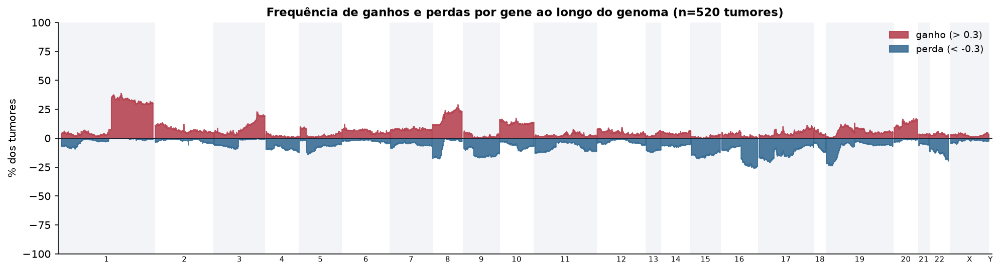
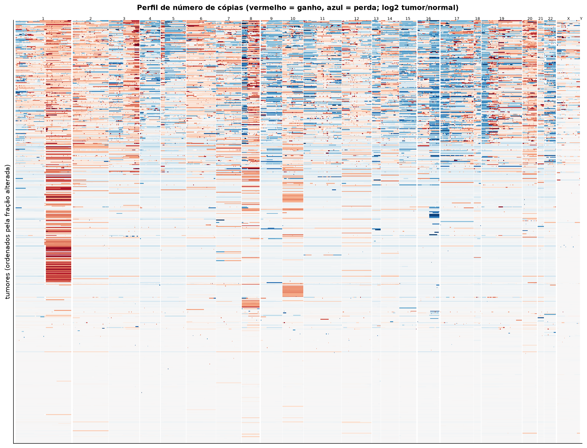
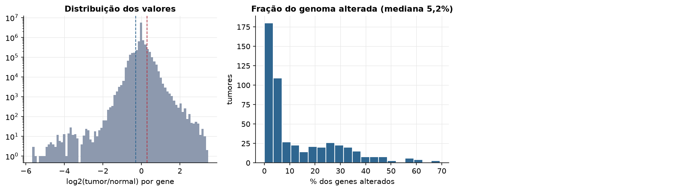
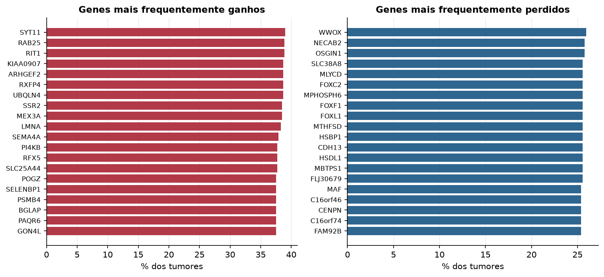

UCEC · Número de cópias (CNV)
Affymetrix SNP6, segmentos whitelisted do PanCanAtlas · gerado em 22/10/2026 05:50
520tumores
17.738genes
5,2%fração alterada mediana
76segmentos/tumor (mediana)
Fonte: SNP6 whitelisted (PanCanAtlas); nível de gene calculado dos segmentos (hg19)
O valor por gene é o do segmento que cobre o meio do gene (log2 tumor/normal, hg19). Sem correção de pureza e ploidia: tumores com pouca célula tumoral têm valores atenuados. Para chamadas discretas (−2 a 2), use o GISTIC2 do PanCanAtlas ou o ABSOLUTE.
Principais resultados
- Mediana de 5,2% dos genes com ganho ou perda por tumor (limiares log2 de 0.3 e -0.3).
- O cromossomo com mais ganhos em média é o 8 (18,2% dos tumores por gene) e o com mais perdas é o 16 (14,3%).
- Genes mais ganhos: SYT11 (39%), RAB25 (39%), RIT1 (39%), KIAA0907 (39%), ARHGEF2 (39%), RXFP4 (39%). Genes mais perdidos: WWOX (26%), NECAB2 (26%), OSGIN1 (26%), SLC38A8 (26%), MLYCD (26%), FOXC2 (26%).
Paisagem ao longo do genoma


Carga de alterações

Genes recorrentes

Top 25 genes por frequência de ganho
| gene | chrom | % ganho | % perda | média log2 |
|---|---|---|---|---|
| SYT11 | 1 | 39 | 0 | 0.257 |
| RAB25 | 1 | 38.8 | 0 | 0.258 |
| RIT1 | 1 | 38.8 | 0 | 0.259 |
| KIAA0907 | 1 | 38.7 | 0 | 0.258 |
| ARHGEF2 | 1 | 38.7 | 0 | 0.258 |
| RXFP4 | 1 | 38.7 | 0 | 0.258 |
| UBQLN4 | 1 | 38.7 | 0 | 0.257 |
| SSR2 | 1 | 38.5 | 0 | 0.258 |
| MEX3A | 1 | 38.5 | 0 | 0.256 |
| LMNA | 1 | 38.3 | 0 | 0.256 |
| SEMA4A | 1 | 37.9 | 0 | 0.251 |
| PI4KB | 1 | 37.7 | 0 | 0.252 |
| RFX5 | 1 | 37.7 | 0 | 0.25 |
| SLC25A44 | 1 | 37.7 | 0 | 0.247 |
| POGZ | 1 | 37.5 | 0 | 0.245 |
| SELENBP1 | 1 | 37.5 | 0 | 0.245 |
| PSMB4 | 1 | 37.5 | 0 | 0.245 |
| BGLAP | 1 | 37.5 | 0 | 0.245 |
| PAQR6 | 1 | 37.5 | 0 | 0.245 |
| GON4L | 1 | 37.5 | 0 | 0.244 |
| PMF1 | 1 | 37.5 | 0 | 0.245 |
| CGN | 1 | 37.3 | 0 | 0.245 |
| SNORA44 | 1 | 37.3 | 0 | 0.245 |
| ZNF687 | 1 | 37.1 | 0 | 0.25 |
| TUFT1 | 1 | 37.1 | 0 | 0.244 |
Top 25 genes por frequência de perda
| gene | chrom | % ganho | % perda | média log2 |
|---|---|---|---|---|
| WWOX | 16 | 1 | 26 | -0.182 |
| NECAB2 | 16 | 0.8 | 25.8 | -0.168 |
| OSGIN1 | 16 | 0.8 | 25.8 | -0.168 |
| SLC38A8 | 16 | 0.8 | 25.6 | -0.167 |
| MLYCD | 16 | 0.8 | 25.6 | -0.168 |
| FOXC2 | 16 | 1 | 25.6 | -0.166 |
| MPHOSPH6 | 16 | 0.8 | 25.6 | -0.167 |
| FOXF1 | 16 | 1 | 25.6 | -0.166 |
| FOXL1 | 16 | 1 | 25.6 | -0.167 |
| MTHFSD | 16 | 1 | 25.6 | -0.166 |
| HSBP1 | 16 | 0.8 | 25.6 | -0.168 |
| CDH13 | 16 | 0.8 | 25.6 | -0.167 |
| HSDL1 | 16 | 1 | 25.6 | -0.165 |
| MBTPS1 | 16 | 0.8 | 25.6 | -0.167 |
| FLJ30679 | 16 | 1 | 25.6 | -0.166 |
| MAF | 16 | 1 | 25.4 | -0.172 |
| C16orf46 | 16 | 1 | 25.4 | -0.163 |
| CENPN | 16 | 1 | 25.4 | -0.163 |
| C16orf74 | 16 | 1 | 25.4 | -0.164 |
| FAM92B | 16 | 1.3 | 25.4 | -0.163 |
| CDYL2 | 16 | 1 | 25.4 | -0.171 |
| HSD17B2 | 16 | 1 | 25.4 | -0.163 |
| GCSH | 16 | 1 | 25.4 | -0.163 |
| ATMIN | 16 | 1 | 25.4 | -0.163 |
| DYNLRB2 | 16 | 1 | 25.4 | -0.171 |